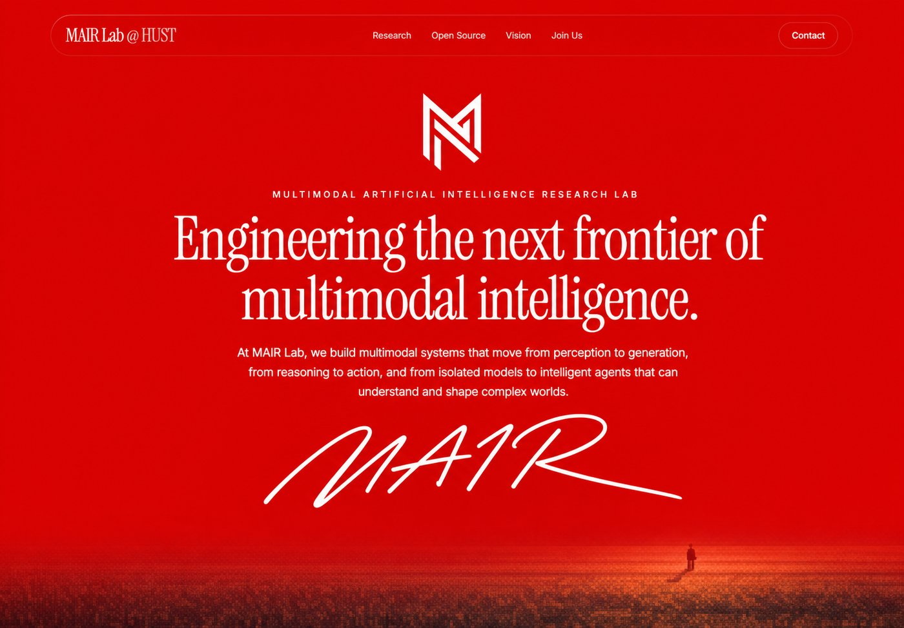
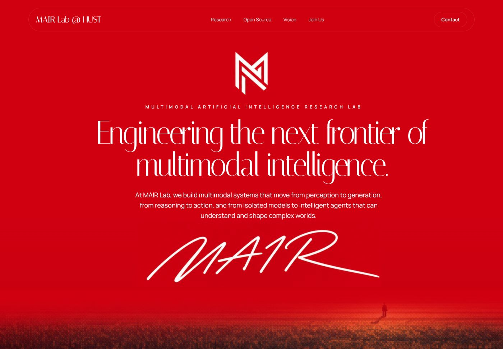
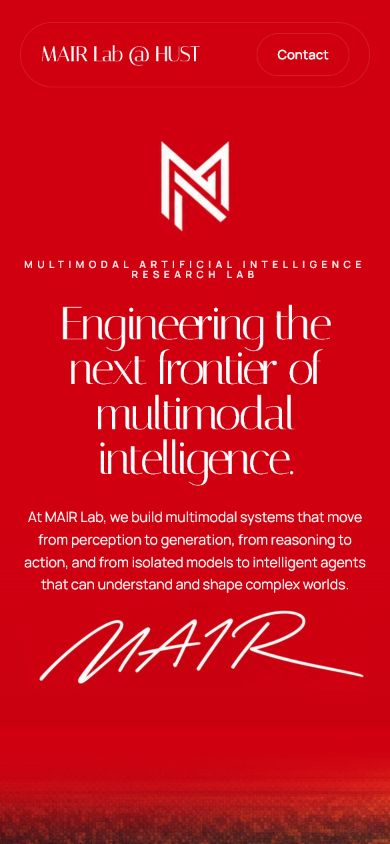
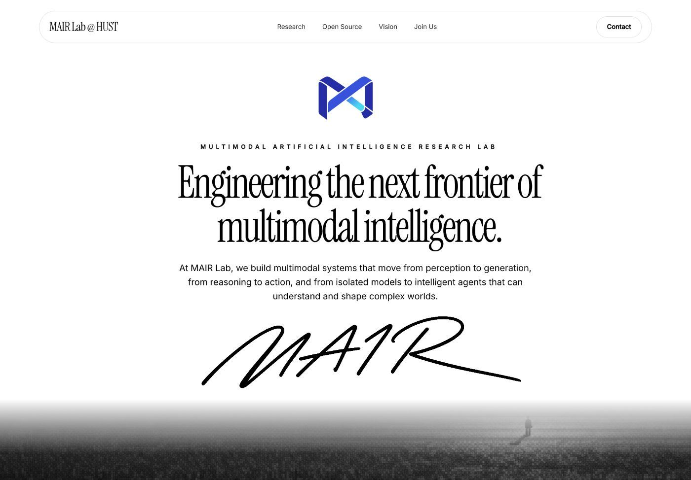

Signature Spine Implementation
The report mockup was treated as the source of truth and implemented at its native 1400×974 reference canvas, with a responsive 390px adaptation.
Source mockup

Initial mockup match


Monochrome revision

Validation
- Reference header frame matched at 1242×65, x=79, y=22.
- Title footprint uses 91px Instrument Serif with controlled horizontal scaling.
- Body typography uses Inter 400/500 through the shared font token.
- The supplied MAIR logo is bundled locally; the red-tinted mockup fallback was removed so only the video remains beneath the white fade.
- The HUST emblem is paired to the right of the MAIR mark with a vertical divider and responsive clear space.
- Desktop and mobile layouts have zero horizontal overflow.
- Vite production build and the existing
/TMPO/route remain valid.